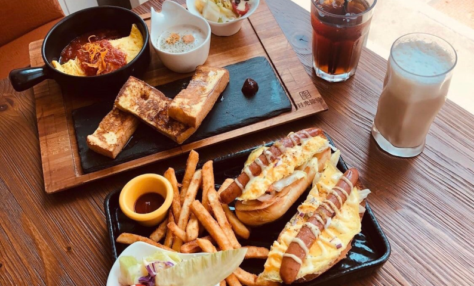

早午餐專區

店員送餐的時候非常仔細的介紹餐點來源製程，飲料講大概5分鐘餐點也講5分鐘吧，有夠用心
👉梅花豬鹹蛋咖哩$140
這盤完全沒加鹽巴，鹹味來源就是咖哩裡面的鹹蛋，加水仙宮買的頂級豬肉、手工製作的黑糖饅頭
乾我覺得鹹蛋加在咖哩裡面有夠好吃，而且蔬菜們也可以沾來吃，超級大推這個😍
👉烤雞$140
醃漬一個晚上的烤雞，沒記錯的話都是現烤，每一盤早午餐的熱量都有精準算過，
吃的健康吃的安心（這什麼廣告台詞XD）每盤的蔬菜都是使用有機蔬果！還有配合五行有五種顏色
額外的溏心蛋是用對環境/雞本人/吃的人類，三方都友善的雞蛋
.
整間店都充滿綠色植物，吃飯的氣氛很棒，座位基本上是2人座，跟少數3人座（好像有瞄到一張大桌子），我平日11.去排隊大概只等了半小時，不能預約所以可能要排很久～～～
最後要提醒的是他的早午餐都140，cp值雖然很高，但它低消是一杯飲料（都100起跳）
然後如果我真的很餓的話，它可能會吃不飽🤔，然後附近很難停機車
2020.3.27
👉梅花豬鹹蛋咖哩$140
這盤完全沒加鹽巴，鹹味來源就是咖哩裡面的鹹蛋，加水仙宮買的頂級豬肉、手工製作的黑糖饅頭
乾我覺得鹹蛋加在咖哩裡面有夠好吃，而且蔬菜們也可以沾來吃，超級大推這個😍
👉烤雞$140
醃漬一個晚上的烤雞，沒記錯的話都是現烤，每一盤早午餐的熱量都有精準算過，
吃的健康吃的安心（這什麼廣告台詞XD）每盤的蔬菜都是使用有機蔬果！還有配合五行有五種顏色
額外的溏心蛋是用對環境/雞本人/吃的人類，三方都友善的雞蛋
.
整間店都充滿綠色植物，吃飯的氣氛很棒，座位基本上是2人座，跟少數3人座（好像有瞄到一張大桌子），我平日11.去排隊大概只等了半小時，不能預約所以可能要排很久～～～
最後要提醒的是他的早午餐都140，cp值雖然很高，但它低消是一杯飲料（都100起跳）
然後如果我真的很餓的話，它可能會吃不飽🤔，然後附近很難停機車
2020.3.27
小北家灶咖
營業時間：09:00-16:30公 休 日：週三
電 話：X
地 址：700台南市中西區郡緯街68號
這家蠻夯的要事前訂位哦～
👉北非蛋（私房菜）$270
我覺得這個超級讚！喜歡番茄的人絕對不可以錯過 用麵包去沾那個醬汁有夠絕配，裡面有兩顆蛋跟香腸，不死鹹卻很下飯（下麵包？），吃完整個飽到不行(⁎⁍̴̛ᴗ⁍̴̛⁎)
👉菌菇鹹派$250
友人說就是菌菇炒蛋XD但因為我本身喜歡菇類所以覺得還不錯！
👉泰奶奶的布丁$70 ❗️這個我真的要強力推薦❗️
即使我前面飽到不行，吃到它的時候還可以一口接著一口😍
第一次吃泰奶口味的布丁，不會太濃但一樣是喜歡的味道，重點是綿密又扎實的口感符合我的喜好啊啊啊，同行三個都大推😂，各位來這邊一定要點！！！
2020.5.24
👉北非蛋（私房菜）$270
我覺得這個超級讚！喜歡番茄的人絕對不可以錯過 用麵包去沾那個醬汁有夠絕配，裡面有兩顆蛋跟香腸，不死鹹卻很下飯（下麵包？），吃完整個飽到不行(⁎⁍̴̛ᴗ⁍̴̛⁎)
👉菌菇鹹派$250
友人說就是菌菇炒蛋XD但因為我本身喜歡菇類所以覺得還不錯！
👉泰奶奶的布丁$70 ❗️這個我真的要強力推薦❗️
即使我前面飽到不行，吃到它的時候還可以一口接著一口😍
第一次吃泰奶口味的布丁，不會太濃但一樣是喜歡的味道，重點是綿密又扎實的口感符合我的喜好啊啊啊，同行三個都大推😂，各位來這邊一定要點！！！
2020.5.24
peko peko
營業時間：10:00-18:00(平日)10:00-16:00(六日)
公 休 日：週三
電 話：(06)228-7219
地 址：700台南市中西區民生路一段132巷5號
隱身在巷弄的老宅早午餐（其實台南很多有名的餐廳都是XD）
記得把機車停在外面馬路上再走進去呦！
.
性格最有名的就是熱飲可以有客製化的拉花，
店家常做的圖案（卡通人物/貓狗）+30~50塊（早上9.~10.可以指定圖案），
自備客製圖案+80，
但現場忙碌時不能客製，記得早點去~
👉熱壓吐司套餐$180-附新鮮蔬果沙拉麵跟飲品
熱壓吐司表皮脆而吐司體又不會太乾，很優秀~
👉新鮮蔬果沙拉麵
有泰式、胡麻、和風芥末三種口味可以選
上面鋪滿滿滿的蔬果、地瓜、水煮蛋，搭配QQ的涼麵，清爽健康又有飽足感
記得把機車停在外面馬路上再走進去呦！
.
性格最有名的就是熱飲可以有客製化的拉花，
店家常做的圖案（卡通人物/貓狗）+30~50塊（早上9.~10.可以指定圖案），
自備客製圖案+80，
但現場忙碌時不能客製，記得早點去~
👉熱壓吐司套餐$180-附新鮮蔬果沙拉麵跟飲品
熱壓吐司表皮脆而吐司體又不會太乾，很優秀~
👉新鮮蔬果沙拉麵
有泰式、胡麻、和風芥末三種口味可以選
上面鋪滿滿滿的蔬果、地瓜、水煮蛋，搭配QQ的涼麵，清爽健康又有飽足感
性格
營業時間：09:00-15:00公 休 日：週四
電 話：(06)223-3330
地 址：704台南市北區成功路68巷4-5號
👉日印雙料咖哩飯
同時有絞肉也有五花肉片！但絕對是絞肉獲勝，絞肉裡面好像有摻雜香料，吃起來很香很下飯💯
旁邊的醃漬物有番茄黃瓜跟洋蔥，酸酸甜甜的可以解膩～
ㄛ但是我不知道旁邊那個脆脆的餅是要怎麼吃配什麼吃😅
👉南洋椰汁雞肉咖哩飯
這個咖哩是有加椰奶的南洋口味，顏色也比較橘，他的雞肉是間隔洋蔥串起來的我覺得很可愛😂
但因為不是使用雞腿肉所以相較起來有點乾但味道是好吃的！
.
這家最近10:30開始營業，但千萬不要傻傻的10.30或想吃的時候才去！
不到10.就有人在排隊，10.多開始登記畫菜單付訂金100
裡面座位只有9個！！！超級少，假日只接1位或2位的客人，如果3-4位要平日ㄛ
而且就算是4位也是要拆成2桌，然後我覺得1位的桌子擺設背景比較美其實😂
像我們10.多就被告知要等到12:30，可以點完餐留電話就離開去附近晃晃，時間到再過來～
雖然不是第一批但後面還有人要等到15.😅
2020.1.8
同時有絞肉也有五花肉片！但絕對是絞肉獲勝，絞肉裡面好像有摻雜香料，吃起來很香很下飯💯
旁邊的醃漬物有番茄黃瓜跟洋蔥，酸酸甜甜的可以解膩～
ㄛ但是我不知道旁邊那個脆脆的餅是要怎麼吃配什麼吃😅
👉南洋椰汁雞肉咖哩飯
這個咖哩是有加椰奶的南洋口味，顏色也比較橘，他的雞肉是間隔洋蔥串起來的我覺得很可愛😂
但因為不是使用雞腿肉所以相較起來有點乾但味道是好吃的！
.
這家最近10:30開始營業，但千萬不要傻傻的10.30或想吃的時候才去！
不到10.就有人在排隊，10.多開始登記畫菜單付訂金100
裡面座位只有9個！！！超級少，假日只接1位或2位的客人，如果3-4位要平日ㄛ
而且就算是4位也是要拆成2桌，然後我覺得1位的桌子擺設背景比較美其實😂
像我們10.多就被告知要等到12:30，可以點完餐留電話就離開去附近晃晃，時間到再過來～
雖然不是第一批但後面還有人要等到15.😅
2020.1.8
裏葉
營業時間：10:00–15:00公 休 日：週五、週六
電 話：X
地 址：704台南市北區西門路三段45巷42弄10號

👉法蘭克福軍艦堡$198
一個餐竟然是給兩個堡，
麵包體蠻鬆軟的，先舖上滿滿的嫩蛋再加上完整的德式香腸，
淋上美乃滋也太罪惡了吧！
附餐的薯條份量也是很多，吃番茄醬配薯條的我還去跟櫃台再要了多一點的番茄醬XD
👉培根玉米起司歐姆蛋$198
黑鍋裡也是大份量的歐姆蛋，口味正常發揮，
還有附上法是吐司跟濃湯，對波波來說也是高cp值阿！
.
這裡的用餐環境超級好，機車停在一樓騎樓即可，
上樓就可以看到乾淨明亮的二樓大空間，白天很適合來坐坐~
一個餐竟然是給兩個堡，
麵包體蠻鬆軟的，先舖上滿滿的嫩蛋再加上完整的德式香腸，
淋上美乃滋也太罪惡了吧！
附餐的薯條份量也是很多，吃番茄醬配薯條的我還去跟櫃台再要了多一點的番茄醬XD
👉培根玉米起司歐姆蛋$198
黑鍋裡也是大份量的歐姆蛋，口味正常發揮，
還有附上法是吐司跟濃湯，對波波來說也是高cp值阿！
.
這裡的用餐環境超級好，機車停在一樓騎樓即可，
上樓就可以看到乾淨明亮的二樓大空間，白天很適合來坐坐~
日光徐徐
營業時間：08:30-16:30公 休 日：X
電 話：(06)235-8809
地 址：704台南市北區前鋒路318號號2樓
這家一定要訂位，一直都是滿滿的人😂這家標榜肉都是用舒肥的，還真的有夠好吃
👉櫻桃鴨胸$360
肉質很軟嫩有一點點肥肉的口感哈哈哈，有附果乾醬但原本就很夠味了！
👉松阪豬330
有松阪豬原本的嚼勁又不會過老嚼不開，黑胡椒調味的很香！！！
👉加點濃湯$45
不得不說這個南瓜濃湯真的💯很濃很綿密卻完全不會膩
👉附餐的薯條是地瓜條！沒有小碟子讓我擠番茄醬只能弄的醜醜的😂
然後他的蛋是最失敗的一個，吃一口就會膩的味道⋯
法式吐司很好吃，但我點的明明是帕瑪森起司...得不到的最想要吧它一定更好吃ಥ_ಥ
.
整體都超級優秀的好吃，特別推肉類跟濃湯（濃湯一定要加點！！！）
最不推蛋🙃但這個價格也是比一般早午餐還要貴
2020.3.16
👉櫻桃鴨胸$360
肉質很軟嫩有一點點肥肉的口感哈哈哈，有附果乾醬但原本就很夠味了！
👉松阪豬330
有松阪豬原本的嚼勁又不會過老嚼不開，黑胡椒調味的很香！！！
👉加點濃湯$45
不得不說這個南瓜濃湯真的💯很濃很綿密卻完全不會膩
👉附餐的薯條是地瓜條！沒有小碟子讓我擠番茄醬只能弄的醜醜的😂
然後他的蛋是最失敗的一個，吃一口就會膩的味道⋯
法式吐司很好吃，但我點的明明是帕瑪森起司...得不到的最想要吧它一定更好吃ಥ_ಥ
.
整體都超級優秀的好吃，特別推肉類跟濃湯（濃湯一定要加點！！！）
最不推蛋🙃但這個價格也是比一般早午餐還要貴
2020.3.16
日好
營業時間：09:00-16:00公 休 日：週二
電 話：(06)312-5599
地 址：710台南市永康區中華二路205號